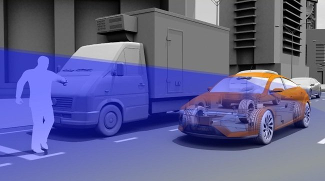
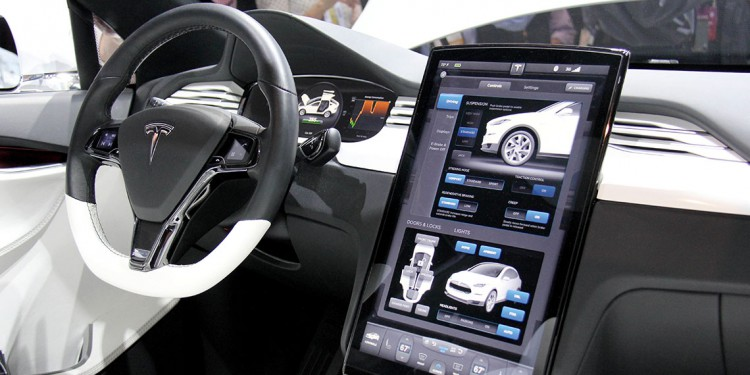

Visión de máquina (VM)
La necesidad de fabricar automóviles más seguros, confiables y robustos para justificar los puntos de precio, está empujando a los fabricantes de automóviles a adoptar la inspección de la máquina. De esta manera, el sistema Visión de Máquina (VM), es una de las tecnologías de automatización en la industria automotriz que satisface esta necesidad, al proporcionar un método de inspección interno automático de la máquina.
De las tecnologías de automatización en la industria automotriz más utilizadas, la VM funciona como el ojo visor del proceso de producción automotriz mediante el uso de procesos de imágenes, que incluyen imágenes convencionales, imágenes hiperespectrales, imágenes infrarrojas, imágenes de escaneo de líneas, imágenes en 3D de superficies e imágenes de rayos X.

Inteligencia Artificial (IA) para autos sin conductor/autónomos
La Inteligencia Artificial (IA) es otra de las tecnologías de automatización en la industria automotriz más utilizadas. Esta tecnología funciona creando y almacenando un mapa interno del entorno (calle, localidad o región) utilizando sensores inteligentes como radar, sonar y/o láser. Seguidamente, procesa estas entradas, traza la trayectoria más plausible, y envía instrucciones a los actuadores del vehículo que controlan la aceleración, el frenado y la dirección.
Con la programación de los protocolos de conducción codificados, los algoritmos de evitación de obstáculos, el modelado predictivo y la discriminación de objetos inteligentes (es decir, conocer la diferencia entre una bicicleta y una motocicleta) el automóvil seguirá las reglas de tránsito, y evitará los obstáculos.

Computación cognitiva en autos conectados de IoT
La computación cognitiva (CC) es otra de las tecnologías de automatización en la industria automotriz más utilizadas. CC es una plataforma de tecnología basada en inteligencia artificial y procesamiento de señales.
Estas plataformas abarcan y utilizan el aprendizaje automático, el razonamiento, el procesamiento del lenguaje humano, el habla y el objeto, la interacción humano-computadora, el diálogo y la generación narrativa, entre otros rasgos inteligentes. Mientras que los automóviles conectados a esta tecnología de automatización, son vehículos que utilizan Internet para conectarse y comunicarse entre sí para crear un tráfico seguro, fácil y sin intervención.